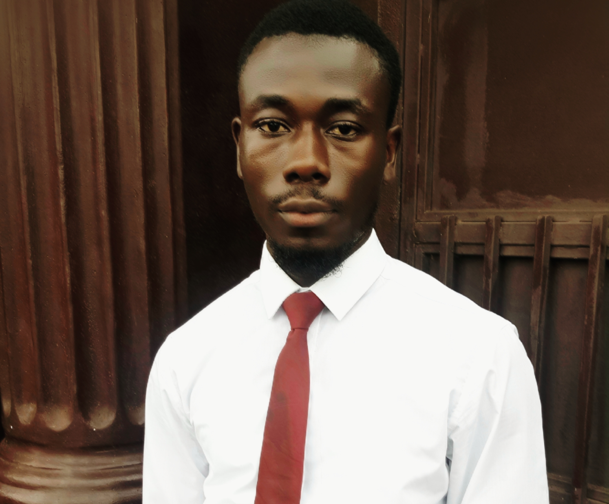

Emmanuel Israel Simbo | WDD 130
My name is Emmanuel Israel Simbo, I live in Freetown- Sierra leone. I am a member of ther church of Jesus Christ of latter Day Saints. I have been a member of the church for almost five years now. As a student of Brigham Young University (BYU) pursuing software development, I am deeply passionate about the ever-evolving world of technology and its potential to shape the future. Hailing from the beautiful land of Sierra Leone, I bring a unique perspective and a rich cultural background to my academic and personal endeavors. My journey into the realm of software development began with a profound curiosity and a desire to understand the intricate workings of computers and digital systems. From tinkering with coding languages to exploring the latest innovations in software engineering, I have immersed myself in a world where creativity meets logic, and problem-solving knows no bounds. At BYU, I have found a nurturing environment that fosters both academic excellence and personal growth. Surrounded by like-minded individuals and supported by dedicated faculty members, I have been able to hone my skills and expand my knowledge in various areas of software development. Whether it's mastering programming languages, delving into database management, or exploring the principles of user experience design, I am constantly striving to broaden my horizons and push the boundaries of what is possible in the digital landscape. Outside of the classroom, I am actively involved in various extracurricular activities and community initiatives. From participating in hackathons to volunteering for local tech outreach programs, I am committed to using my skills and expertise to make a positive impact on the world around me. Whether it's developing innovative solutions to real-world problems or inspiring the next generation of tech enthusiasts, I am dedicated to leveraging technology for the greater good. In my free time, you can often find me exploring the natural beauty of Sierra Leone, whether it's hiking through lush rainforests, lounging on pristine beaches, or immersing myself in the vibrant culture and traditions of my homeland. These experiences not only provide me with much-needed relaxation and rejuvenation but also serve as a constant reminder of the importance of staying connected to my roots and embracing the diversity of the world we live in.